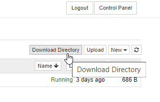

User Guide¶
This page contains information about using and customizing your 2i2c Hubs.
Include content in your hub¶
To include content in your hub (e.g., scripts, notebooks, etc) we recommend using nbgitpuller.
You can use nbgitpuller to generate a link to a public repository, or a file in that repository. When a user clicks that link, then a copy of the link’s target will be automatically placed in the user’s home directory, and they will be directed to that content in the JupyterHub (if they are logged in).
Generate an nbgitpuller link by going to
nbgitpuller.link. You’ll be asked to provide some information about the content you wish to share, and can copy the link when you are done.Use
https://<your-hub>.pilot.2i2c.cloudas your JupyterHub addressFill in the GitHub repository where your content exists (along with an optional file path or branch name)
The link will be in the field just above your form.
Share this link with your users. Anybody can click an
nbgitpullerlink. If they have an account on the hub to which it points, then they’ll get a copy of the content that you’ve linked to.
Download your notebooks as PDFs¶
2i2c Hub come with the ability to convert a Jupyter Notebook as a PDF that users may download locally. To do so, use the Jupyter interface of your choice as shown below:
{kind=link}
{kind=link}
Write public books that connect to a 2i2c Hub¶
You can create public content that is designed to have connections with your 2i2c Hub. For example, you can create lectures from Jupyter Notebooks, and allow students to grab their own copy of the notebook to interact with on the 2i2c Hub.
To connect your public content with a 2i2c Hub, we recommend using Jupyter Book. This is an open-source project that allows you to share collections of notebooks and markdown files as an online website and book. Check out the Jupyter Book getting started guide for more information about Jupyter Book.
You can tell Jupyter Book to place links directly to your 2i2c Hub on each page that is served from a notebook. To do so, follow the launch buttons for JupyterHubs instructions. Make sure that you configure your jupyterhub_url to point to the URL of your 2i2c Hub (e.g., https://<your-hub>.pilot.2i2c.cloud).
Download your data from a hub¶
If you’d like to stop using your 2i2c Hub, or would simply like to move your data onto your own machine (or elsewhere in the cloud), take the following steps to download your data locally:
Navigate to the Jupyter “tree” view by changing your URL path to
/tree. e.g.,<your-hub>.pilot.2i2c.cloud/user/<your-username>/treeClick on
Download Directory.
This will zip up the contents of your user file system and download them to your machine.